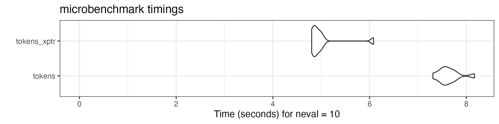

vignettes/pkgdown/tokens_xptr.Rmd
tokens_xptr.Rmdtokens_xptr in
quanteda 4
In quanteda version 4.0, we introduced a new class
of tokens object, tokens_xptr. This object enhances the
efficiency of adjusting tokens objects based on large text corpora. A
sub-class of the tokens object, tokens_xptr is
built using on the external-pointer object Rcpp::XPtr.
External pointers allow quanteda’s tokens operations to
pass references to the object to be modified by the highly optimized C++
routines that perform these operations, without the overhead of passing
the objects by value back and forth from C++ to R code.
Prior to version 4, quanteda’s only version of a
tokens object has been an R list of integer vectors with
each integer mapped to a unique type. With each call of a
tokens_*() function, this object is converted to a C++
object, modified in C++, and then passed by value back to R and then
recreated into an R tokens object. Such conversion between
R and C++ consumes a large part of the execution time of each
tokens_*() function call, and this time consumption grows
as the size of the tokens object increases.
With the introduction of the tokens_xptr object, this
conversion upon passing the object for modification is fundamentally
changed, to passing just the reference to the tokens object so that it
can be modified by passing a reference (the external pointer) to the
object, eliminating the transaction costs of passing the classic
tokens object by value. The benefits of this are especially
visible when large tokens objects are processed, say those with more
than one million tokens, while still benefitting from the sequential
steps used in the typical quanteda tokens formatting
pipeline, such as creating the tokens, removing some based on a pattern,
lower-casing them, forming n-grams, etc. Formerly, with each step this
large object was passed by value. With tokens_xptr,
successive token processing steps only pass the external pointer,
resulting in significant efficiency gains without changing the clear
syntax and workflow used in a typical quanteda tokens
processing pipeline.
These efficiency gains are only evident for large tokens objects, for
instance those with more than one million tokens. The default
tokens object format remains the non-external pointer type,
but below, we show how to create and work with the
tokens_xptr variant. All of the tokens_*()
functions work the same for both object classes, so that the user-facing
differences are almost unnoticeable between the two object types.
A detailed comparison of performance gains and execution times for
tokens versus tokens_xptr objects is available
in a separate
article.
There are two easy methods of creating a tokens_xptr
object.
First, you can create a tokens_xptr from
tokens using the as.tokens_xptr() method.
toks <- tokens(data_corpus_inaugural)
print(toks, 0, 0)
## Tokens consisting of 59 documents and 4 docvars.
xtoks <- as.tokens_xptr(toks)
print(xtoks, 0, 0)
## Tokens consisting of 59 documents and 4 docvars (pointer to 0x1409509b0).Second, this step can be performed by setting
xptr = TRUE argument in tokens().
xtoks2 <- tokens(data_corpus_inaugural, xptr = TRUE)
print(xtoks2, 0, 0)
## Tokens consisting of 59 documents and 4 docvars (pointer to 0x141015778).When xtoks object is printed, the address of its
underlying data is shown as (pointer to xxxx). Because two
different objects were created above, the addresses displayed for
xtoks and xtoks2 are different. We expand on
this below, in the discussion of shallow versus deep copies, when
binding new object names to existing toks_xptr objects.
tokens_xptr objects
When we create a new object by assigning that to an existing
tokens_xptr, this creates what is known as a “shallow
copy”. A shallow copy is just a copy of the pointer to the
memory address where the tokens_xptr version of the tokens
objects exists. This contrasts with a “deep copy”, in which the new
object takes its data through a physical copy of the data from the old
memory location to a new one for the object. Assignment via a deep
copy is the how assignment of a a regular tokens
object — and indeed most R objects — works.
We can see this in operation here:
toks <- data_corpus_inaugural |>
corpus_reshape(to = "sentences") |>
tokens()
xtoks <- as.tokens_xptr(toks)
print(xtoks, 0, 0)
## Tokens consisting of 5,234 documents and 4 docvars (pointer to 0x127df6d00).
# shallow copy
xtoks_copy <- xtoks
print(xtoks_copy, 0, 0)
## Tokens consisting of 5,234 documents and 4 docvars (pointer to 0x127df6d00).As an external pointer object, the underlying data of the copy of the
object xtoks_copy is the same. This means that operations
on xtoks using tokens_* functions also affect
xtoks_copy even after the copying (shallow copy).
print(xtoks, max_ndoc = 1)
## Tokens consisting of 5,234 documents and 4 docvars (pointer to 0x127df6d00).
## 1789-Washington.1 :
## [1] "Fellow-Citizens" "of" "the" "Senate"
## [5] "and" "of" "the" "House"
## [9] "of" "Representatives" ":" "Among"
## [ ... and 37 more ]
##
## [ reached max_ndoc ... 5,233 more documents ]
xtoks_copy <- xtoks_copy |>
tokens_remove(stopwords("en")) |>
tokens_tolower()
print(xtoks, max_ndoc = 1)
## Tokens consisting of 5,234 documents and 4 docvars (pointer to 0x127df6d00).
## 1789-Washington.1 :
## [1] "fellow-citizens" "senate" "house" "representatives"
## [5] ":" "among" "vicissitudes" "incident"
## [9] "life" "event" "filled" "greater"
## [ ... and 11 more ]
##
## [ reached max_ndoc ... 5,233 more documents ]This is not the normal R behaviour for modifying objects, but does exist in other packages that use external pointers, for instance, data.table, which has an entire vignette on reference semantics.
If you want to copy the underlying data of a tokens_xptr
object (a deep copy), this can be done explicitly using
copy() or using as.tokens_xptr().
# deep copies
# print(copy(xtoks), 0, 0)
# print(as.tokens_xptr(xtoks), 0, 0)Each of these has a different memory address from that of the
xtoks object above.
tokens_xptr objects using
tokens_*() functions
The functions that modify tokens_xptr objects work in
exactly the same way as they do for tokens objects, with
the exception that they modify those objects by reference rather than
passing copies by value back and forth from R to the underlying C++ code
that performs the work.
Not all of the tokens_() functions are implemented this
way, because the efficiency gains for some would be negligible.
tokens_select(), tokens_compound(),
tokens_lookup(), tokens_ngrams() and
tokens_replace() will return a shallow copy of the input
object for efficiency. However, tokens_subset(),
[], tokens_group(),
tokens_segment() and tokens_chunk() return a
deep copy because they can change the number of the order of the
documents. If in any doubt, inspect the attention to the address of the
pointer (pointer to xxxx) when using
tokens_xptr objects.
print(xtoks, 0, 0)
## Tokens consisting of 5,234 documents and 4 docvars (pointer to 0x127df6d00).
# shallow copy
xtoks2 <- tokens_remove(xtoks, stopwords("en"))
print(xtoks2, 0, 0)
## Tokens consisting of 5,234 documents and 4 docvars (pointer to 0x127df6d00).
# deep copy
xtoks3 <- tokens_subset(xtoks, lengths(toks) > 150)
print(xtoks3, 0, 0)
## Tokens consisting of 11 documents and 4 docvars (pointer to 0x1404726d8).tokens_xptr objects
Because they point to a memory location rather than containing the
data itself, a tokens_xptr object needs first needs to be
converted to a tokens object before its data can be saved
to disk. This is simple and performed by applying the
as.tokens() method to the tokens_xptr object.
After conversion, it can be saved normally using save() or
saveRDS().
tokens_xptr
object
Passing a tokens_xptr object directly to
dfm() to compile a document-feature matrix avoids a deep
copy of that object and for larger objects can significantly reduce
execution times for dfm creation.
We demonstrate this below, using severaltokens_*()
functions to tokens and tokens_xptr objects to
construct a dfm in this mock pipeline. The execution time
for the latter is significantly shorter than for the former, thanks to
the cost saved by passing the data without the expensive conversion.
library("ggplot2")
library("microbenchmark")
data_corpus_guardian <- quanteda.corpora::download("data_corpus_guardian")
toks <- data_corpus_guardian |>
corpus_reshape(to = "sentences") |>
tokens()
microbenchmark::microbenchmark(
tokens = toks |>
tokens_remove(stopwords("en"), padding = TRUE) |>
tokens_remove(c("http:*", "https:*", "*.com", "*.org", "*.net"), padding = TRUE) |>
tokens_compound(newsmap::data_dictionary_newsmap_en) |>
dfm(remove_padding = TRUE),
tokens_xptr = as.tokens_xptr(toks) |>
tokens_remove(stopwords("en"), padding = TRUE) |>
tokens_remove(c("http:*", "https:*", "*.com", "*.org", "*.net"), padding = TRUE) |>
tokens_compound(newsmap::data_dictionary_newsmap_en) |>
dfm(remove_padding = TRUE),
times = 10
) |> autoplot(log = FALSE)
## Warning in microbenchmark::microbenchmark(tokens =
## dfm(tokens_compound(tokens_remove(tokens_remove(toks, : less accurate
## nanosecond times to avoid potential integer overflows
We explore further benchmarks and comparisons for
tokens_xptr usage in a separate article.